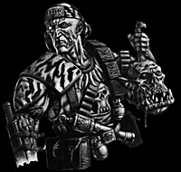
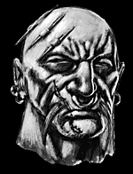
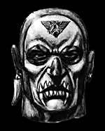

Imperial Forces |
Force Disposition Introduction |
Ork Forces |
|
 Keyser, who they call the sergeant but who wears no rank pins I can see, calls a halt. He gets up on the limed trunk of a massive fallen cypress and stands, sniffing the air. We wait, thigh deep in the stinking soup below. The wet air seems to fill my lungs with steam, and I want to cough, but the Skinner nearest me, a lean brute with charcoal-blackened eye-sockets and piercings down his ears, fixes me with a savage glare as if he can tell what I’m thinking. Keyser waves three scouts ahead, and that leaves thirty of us, twenty two Skinners and eight Jopall Indentured. I’m halfway down the file, the swamp water bubbling and oozing around my legs, dust flies swirling round me. The silent halt seems to last an eternity. There are spiders in my hair. I can feel them. Captain Lorit, looking as out of place as the rest of us Jopall in his white-flecked, jade green fatigues and white peaked cap, wades forward. "What are we-" he begins. The Skinner they call Pig, standing to the Captain’s left, surges forward and takes my commander in a choke hold, clamping one greasy paw across his mouth. The Captain struggles, wild-eyed, and Pig tightens his grip. The reason for Pig's nickname is self-evident - slabby and fat, with vastly developed muscle groups stretching his tattered tunic, he has a face ruined by scars and a ragged snout of flesh where his nose was bitten off. Pig's muscles tighten further and the Captain begins to turn blue. We Jopall look on in silent disbelief. Keyser drops his hand and the Skinners un-freeze and move again. Pig releases the Captain and throws him, gagging, face down into the water. Keyser's jumped down off the cypress by then, and drags the Captain up with one hand. "He assaulted me! That man assaulted me! Put him on a charge!" The Captain spits out weed and slime, indignant. Keyser doesn't put Pig on a charge. He punches the Captain in the throat and silences him. The Skinners laugh, an ugly sound. Pig snorts, a far, far uglier noise. "I thought we covered this in basic back at Cerbera. When I signal silence out here in the Green, I mean silence." Keyser's voice is a sharp and taut as a wire. He says this to the Captain, who is too busy grovelling and vomiting in the liquid mud to listen attentively. .He turns to the rest of us. "We've got a scent of the 'skins. Close by, no more than a kilometre. Arm, load and follow. No noise. Especially you skin-bait." That's what we are to them. Not Imperial Guard, not fellow troopers, not noble soldiers from the Jopall Indentured Squadrons. No matter most of us are from good, up-hive stock, no matter our comrades are even now defending the walls of Tarterus Hive against the Invasion. We are skinbait. Nothing. Lower than scum. For these Skinners set the value of scum. There are juve-gangs from the Tarterus underhive I''d have more respect for. It is my considerable misfortune, mine and the other members of my squad, to have been sent to Cerbera Base to undergo jungle warfare training with the Ork Hunters just as the war for beloved Armageddon began. There is no hope of rejoining our company or hive. We are stuck for the duration, seconded to one of the most notorious units of 'skull-takers', the so-called Keyser's Skinners. Once in a while, from very far away, we hear the thump of artillery or the scream of ram-jets. Open war is being waged in the lands beyond the jungle, far away. It may as well be on another world. Word is Yarrick himself had returned. Oh to be part of that! Oh to not be part of this...I believe the Skull-takers have been fighting the feral greenskins for so long, they have begun to mirror what they fight. The least of them are painted and pierced, the worst have implanted tusks jutting from their jawlines. All have ork finger-bones, teeth and ears dangling from them as grisly trophies. They have no official chain of command. They respect no rank or authority other than their own. I have been told they elect their leaders. Think of that! We edge forward now, slopping through the pools of mire; thick, sticky fluid like mucus. Dragonflies, with stained-glass wings as wide as a man's arm span, cross the glades, beating the air louder than the blade-fans of the air-cars in Tarterus' elite district. Skaters as big as my hand skitter across the sheened water. Pig tells us we're wading through sap, sap drooled out of the fleshy cycads and root-ferns all around. He snorts again. It's hard to catch my breath the air is so humid. The Skinners though...they move so silently. They disturb nothing. They make no ripples, leave no trace. Their damn boots never get stuck in the mud-pools, their sleeves never catch on thorns. Fronds never whip back as they pass. Bark doesn't snap as they climb over it. Even cobwebs remain miraculously intact, as if the Skinners were never there. For course brutes, they move with unimaginable care and enviable skill. We Jopall blunder like fools amongst them. I spent four weeks last summer on a covert training course at the Hades Hive Guard Academy. I did well. I thought I was good. How...how in the name of the Emperor who watches us all do you not make a ripple when you wade through water? We stop once more, and I lean against the bole of a giant ginkgo. Something has laid a clutch of wet, yellow eggs in the fabric of my jacket cuff. The size of rice grains, they glisten. I shudder and make to wipe them off. A dirty hand grabs mine and stops me. It is the Skinner with the blackened eye sockets. "Don't touch them. Rot-wasp eggs. Be thankful they chose your fancy jacket to lay in and not your ear, or your genitals, or your tear-ducts." He scrapes the eggs off me with the blade of a rusty shearknife. I look at him, bewildered. "You wanna wake up with larvae muching out of your nose? Eating out your brain?" I shake my head. Who would? He chuckles. "What's your name?" I ask. "Deadhead." "No...your real name." "Er...Rickles," he replies, as if he has to think about it. Then he turns away. "Don't you want to know my name?" I call after him. He turns back with a shrug. "No point remembering the name of a skin-bait who'll be dead by tonight. I'll never use your name anyway." Anger puffs up inside me, dry and fire-hot despite my sweat. "I'm Corporal Ondy Scalber of the Jopall Indentured, you scum-sucker! Remember it! Emperor help you that you do ever have to use it!" He grins, as if my forthright attitude has impressed him. But he punches me in the mouth anyway. We press on, the ever-quiet Skinners silently punishing every clumsy stumble of us Nireh. We reach a glade where the vast upper canopy is broken and sunlight streams down bright as lasers. There are flowers here, floating on the frothy, weed-choked water, huge flowers with shocking pink heads. Huge insects too, slow and drowsy, buzzing the air like chainswords and dripping nectar from each hideously limp proboscis. A pallid white serpent with vestigial limbs slides through the murk between my legs. My friend, Trooper Rokar, starts to whimper. He has just discovered that something unseen and submerged has gnawed off the cap of his boot...along with two of his smaller toes. I was a scholam with Rokar. I pity him. His injury. His weakness. The scouts come back, two of them. We never see the third again. They confer with Keyser for a while. Then he tells us, low and mean, there's a nest nearby and we must fan out. Rokar is whimpering even more now, and begins to climb up into a tree. The Captain tries to call him down. Rokar shakes his head, refusing, terrified. Keyser gets him out of the tree. He throws a stab-knife and impales my old friend through the sternum. Rokar drops and hits the ooze with a wet slap. His body sinks. "He was no use to us anyway. A liability. Worse than a liability," Keyser tells the Captain. The Captain is speechless with rage and horror. We all are. I don't know what to think or feel any more. I am sent on the right hand side of the fan advance, with Deadhead and Pig, and another Skinner called Toaster who hefts a heavy flamer unit. Trooper Flinder of the Jopall is with us. Pig stops us under the shade of a horsetail and smears foul smelling grease over our skin from a dirty pot. Now we smell as bad as the Skinners, and I notice for the first time that they are caked in the stuff. It isn't just dirt. It's deliberate. "It's 'skin tallow," Toaster sneers as he explains while checking the hoses of his sooty flamer. "Now you won't smell of soap and humans." Pig has just daubed us with ork grease, blubber fat from their pestilent bodies. My stomach turns over. We edge onwards. Flinder and I try to be as silent as the Skinners. Our efforts seem laughable. Then Deadhead stops me again, and points down at the gossamer skein my shin was about to break. He traces it back to a clump of flowering moss and gently exhumes a clutch of stik-bombs, wired to the cord. Keyser appears. "Good work, Deadhead. Good eye." "Wasn't me who found it, sir. It was Ondy there." I look round, delighted to hear my name used. "His shin, anyway," Deadhead adds, and he and the Skinner boss laugh out loud. Curse their filthy hides. We crouch in sap-water for half an hour, not daring to breathe. Bird calls and insect chirrups wing through the air. Some of them are natural, some are disguised signals. I can't tell them apart. Deadhead waves us on. As we cross a deep culvert of mud and slime, I see movement in the far treeline. I've always had a good eye. It's the one skill I'm still proud of. I make something pustular and green amid the Green. So I don't hesitate. I raise my las-rifle, and fire a stuttered burst. Something big and green and tusked and monstrous slumps out of the foliage, its chest cavity exploded, and drops into the mere. Then hell breaks loose. There are 'skins all around us, throwing themselves up out of the ooze, spitting out the hollow reeds they were breathing through. They are lean, malnourished, pale things, with jutting teeth like anthracite and deep-set eyes like diamonds. They howl and whoop. They stink. They wield heavy cleavers, cudgels and crude sidearms. We're all firing. Gunfire explodes from the other elements of our formation. The wet air becomes cinder dry with ozone from the las-discharge. Las rounds pepper through the leaf cover and fill the air with sap-vapour. Toaster triggers his flamer and wastes the curtain of foliage before us. Swine-shrieks issue from the raging fire, piercingly harsh. I fire, on full-auto now, dropping 'skins around him. A rusty cleaver takes Flinder's head off his shoulders in a welter of blood and frayed tissue. I see Captain Lorit lifted right up out of the water on a primitive spear that transfixes his gut. He screams, piteously, flailing his limbs. I had fixed my bayonet hours before, as per the Skinners' briefing. Now, with las-rounds expended and no time to change the clip, I stab and gut and slash. Deadhead is nearby. He has wrested an ork lance from some dead grip, and is splitting skulls and whooping like an 'skin. Toaster fires again, his belch of flamer vaporising a tide of charging 'skins so that nothing but their fused skeletons slump in the steaming water, dribbling molten fat. I impale a charging 'skin on my rifle-blade. It howls and pulls towards me, dragging the weapon out of my grasp. There is a plate-metal hatchet in its massive paw already wet with human brain tissue. I pull my autopistol and blow its face apart. "Throw! Throw!" yells Deadhead, tossing me a clutch of stik-bombs. We hurl them together into the densest part of the 'skin press. In the flash-wash, slivers of shrapnel flutter back, stippling the water with a million separate impacts. The Orks turn and melt away, as if they were never there. We regroup. Five Skinners are dead. I am one of only three Jopall left alive. I slump, hollowed by shock, against a lichen-covered rock with the others of my hive as the Skinners lock down the perimeter and take the spoils. "What do you want?" Pig asks, and I turn. He is sawing the head off an ork corpse with a serrated knife. "What?" "An ear? A tooth? You earned it." My gut tosses in revulsion. 'skin ichor is leaking from the sawed incision he is working and forms a stinking slick on the water's surface. "Don't make a mistake now, Ondy Scalber." It is Deadhead. His voice is low. "A mistake?" "Pig's offering you a trophy. Can';t remember the last time Pig did that for skin-bait. It's an honour. Don't refuse it." "A tooth then," says I, turning back to see the butchery. "Yeah," agrees Deadhead. "He had a good eye back there. Saw them first." Pig nods, snorts, and digs his blade in. "A good eye? Then that's what he'll get. A good eye for Good Eye!" Pig and Deadhead laugh. Pig hands me the trophy. It dangles like a pendant on its long rope of blood-black optic nerve. I can't refuse. I take it, tie it to my dog-tags. It thumps against my chest like a rubber ball at every move I make. As soon as Pig is gone, I'll lose it. The Skinners build what they call Warning Shrines. Ork skulls and limbs spiked on posts or nailed to trunks. The idea is the 'skins will now shun this area because it stinks of murder and defeat. But the Skinners wire up the remnants to grenades anyway, in case the skins decide to recover their dead. It's what Keyser calls a win-win situation. Keyser. I see him across the clearing as the Skinner's raise the ork heads on display all around us. He is bent over the eviscerated body of Captain Lorit, who is cruelly still alive. Toaster says Keyser is giving the Captain last rites. I see the sudden twist of Keyser's hand. That wasn't last rites as we know it. The nest is close. We move in, forming small groups. I find myself with Pig, Toaster, and two other Skinners called Slipknot and Buck. In the glade ahead, swathed in vapour, rises a great, ghostly tree. I sense it is not one tree but several that have become wrapped around each other over time. Hundreds of meters tall and thousands of years old, the great, entwined trunks are lifted clear of the water by a vast raft of winding roots. Birds flitter in the upper canopy. Beetles crawl and gnaw on the exposed roots. We enter the root system, finding a tunnel half-filled with rank water. The roots coil and interlock above our stooped heads, reminding me of the interlocking arch vaults of the glorious Ecclesiarchy chapel back home on Jopall. Toaster leads the way. We can smell the leaking promethium of his blackened flamer. Buck shows me how to take a strip of field dressing and soak it in the swamp water to make a breath mask. Already, the pungent smoke of fires deliberately lit by the scouts on the far side of the nest is creeping back to us. I breathe through wet gauze. They're on us a moment later. Toaster scours the tunnel with his flamer, but they're pouring out of side turnings we didn't even see. I'm killing them even as I realise these are youngsters, small 'skin spawn no taller than my waist, weeping and shrieking as they run from the smoke. Children. That's what we'd call them. I don't care anymore. Slipknot and I push down a side-vent, clawing our way through the tangles of black roots, and engage fierce 'skin youths, who jab at us with short spears and broken blades. No match for las-fire. "This way, Good Eye!" I hear Slipknot shout. Then I'm into a larger root cavity, with Buck and Slipknot on my heels. We can still hear the rasp of Toaster's flamer nearby, and smell the burning promethium. Feral orks are all around us now, many full-grown and massive. Some have guns. Slipknot is blown apart by a bolt round. His left hand slaps against my shoulder as it is blown clear of his carcass. I kill the ork with the bolter. Then Buck and I pepper the cavity with random automatic fire. Green blood splats and sprays in the close air. An ork is right on top of me, howling, raising a blade in a meaty paw bigger then my head. My gun is out. I fumble. He sees the eye bouncing across my chest and it seems to make him pause. I need no further urging. I slam the bayonet up into his mouth so the blade-end punches out through the back of his skull. His huge jaws, spasming shut as he dies, bite the end off my las gun. I take up his blade in my right hand, holding my autopistol in my left. With the blade I dash out 'skin brains. With the pistol I wound and cripple and kill. I am plastered with 'skin blood now, as feral as the things I slay, murderous, wanton, out of my mind. Jopall seems a long, long way away. Further than ever before. And I know now I can't go back there. Not now. Not after this. Toaster comes in behind us and yells for us to drop. Buck does, and I pull my head down as the flamer wash gusts like a sun's heat over our heads, incinerating the rest of the chamber. We're all laughing as we clamber out of the nest. Golder and Spaff, the remaining Indentured Squadrons, look as me as if I have run mad. I know how I must look to them, singed and filthy and covered in 'skin blood that is baked like treacle. I don't care. I don't care what they thought. I don't care for anything anymore. Keyser is fighting the boss. Driven out by the smoke and carrying an ragged stomach wound, the massive 'skin has found himself cornered in a sap-pool east of the nest. Keyser confronts him. We all group around to watch. No one interferes. We just watch and whoop and chant. Like orks. The 'skin boss is two hundred pounds heavier than Keyser, and massively muscled, with molars like daggers and tusks like bayonets. He wears turtle-shell breast plate, and carries a hooked bill on one paw and a gutting knife in the other. Its torn belly oozing foul-smelling ichor and making the thing crouch. Keyser, lank and lean in tattered camo-fatigues and webbing, his skin white with paint, has only a shear-knife. They circle and jab. We stand around the clearing, clapping and cheering, chanting 'Key-ser! Key-ser!" like animals. The boss circles in, sidestepping Keyser's blade and taking a decent cut of meat from Keyser's left thigh with his bill. In return, Keyser swings and kicks the monster square in its wounded abdomen, throwing him back into the water in a spray of slime. The boss rises to his feet awkwardly. Keyser is now limping from the ragged slice in the meat of his thigh, a slice that has flapped the skin open to show pink meat and gleaming white bone. Another swing with the bill, an evasive deflection from Keyser's knife. How can he go on with a wound that bad? I wonder. But he does. Keyser splashes through the churning, foamy water and rips his blade along the boss's forearm, causing him to drop his bill. .Then Keyser swings in counter-clockwise and buries his blade up to the hilt in the boss's throat. Gurgling and aspirating mists of blood, the boss falls on his back, surging water across the clearing under his vast bulk. And dies.
We chant Keyser's name so loud that leaves shake lose and drop from the canopy. Ondy Scalber is dead. He died somewhere and somewhen in the glades of Armegeddon's vicious jungles. I only barely remember him now. He was a good sort, I suppose. What I am become now, only time will tell. I hate it, yet I love it too. It is a way of life and of death that appeals to me in its simplicity. To hunt, to kill, to be a better hunter and better killer than the brutes we stalk. To be Good Eye. One day, perhaps, I'll remember Jopall and the life I had there. Perhaps. I may wake screaming in the night, dreaming of it. I may not. The Green waits for me. There I will do my work, in the Emperor's name. There I will find my glory. GO TO THE BLACK LIBRARY! If you enjoyed this story make sure you go to the Black Library Website to check out all of the fantastic stories and eye-popping comics which are available each month in Inferno Magazine, Warhammer Monthly and our large selection of Novels from Games Workshop's premiere publishing division! |